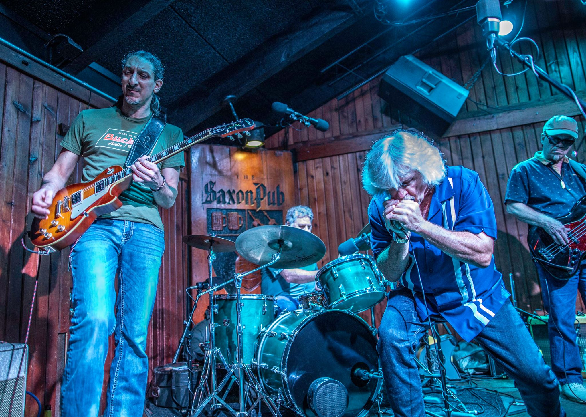
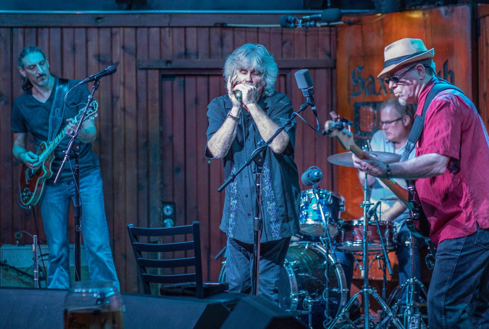
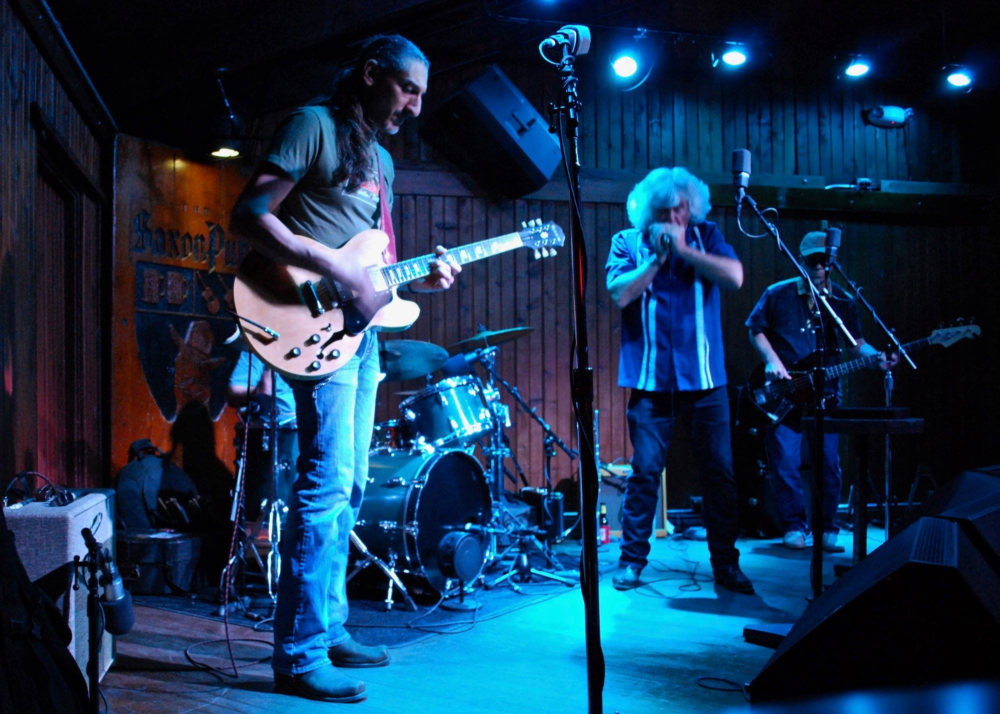

Kevin &the Krawlers is a real blues band and every sense of the word.

A long time Austinite and veteran of the Austin music scene, Kevin has played in numerous local bands including Jumpstart, The Crawlers, Bad Influence, and The Burners. Often seen at the local blues jams around town he can't stand still when the band is jumpin' and loves to belt out the blues. Learned to play blues harp walkin' the railroad tracks and Jethro Tull got him interested in playing flute which adds a special touch to the band's repertoire. Howlin' Wolf, Paul Butterfield, Slim Harpo, and Little Walter are artist that have had the greatest influence on him musically.

Discovered blues as a teenager. Though well-versed in traditional rock, blues rock and Southern rock, Jeff has the blues and loves playing them too. Steve Royal - Drums, Vocal: Originally from Sacramento by way RCA/Grunt Records San Francisco, played with members of "The Wrecking Crew" Gold Star Recording LA, played on New Orleans famous Bourbons St for years before and after hurricane Katrina. Now he is in The Music Capitol of The World - Austin, Texas.

A Blues veteran of many year Jackie was with Stevie Ray during his formative stages. Alway on the mark Jackie holds down the low end so we can wail on the high!